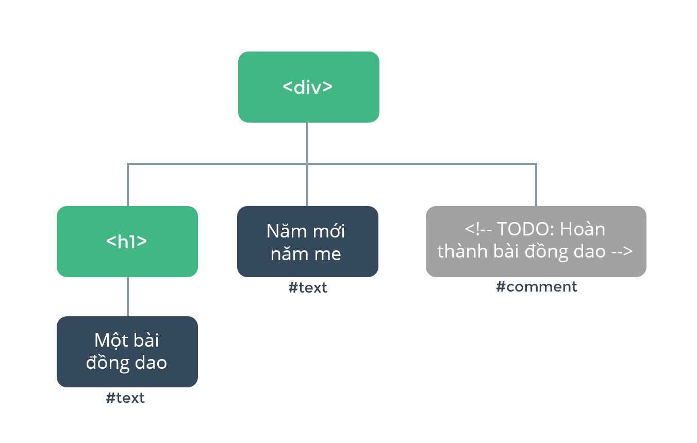

DOM là viết tắt của Document Object Model (Mô hình Đối tượng Tài liệu) dùng để truy xuất các tài liệu dạng HTML và XML. DOM đại diện cho một tài liệu như là một cây cấu trúc dữ liệu. Còn node thì đại diện cho một phần tử trong DOM.
Ví dụ đoạn code HTML dưới đây sẽ mô tả cách trình duyệt hoạt động.
<div>
<h1>Bài đồng dao</h1>
Năm mới năm me
<!-- TODO: Hoàn thành bài đồng dao -->
</div>
Khi đọc đoạn code này, trình duyệt sẽ xây dựng cấu trúc dạng cây (DOM tree) bao gồm các “DOM node” để giúp quản lí mọi thứ, tương tự như việc bạn xây dựng một cây gia phả để giữ thông tin về mọi người trong dòng họ vậy.
Cấu trúc cây của đoạn HTML trên sẽ giống như sau:

Mỗi phần tử trên DOM tree là một node. Mỗi text là một node. Ngay cả comment cũng là node! Một node đơn giản chỉ là một “mảnh” trên trang web. Và cũng tương tự như trong một cây gia phả, mỗi node có thể có các node con (nghĩa là một mảnh có thể chứa các mảnh khác).
Nếu muốn thay đổi giá trị các thẻ HTML, bạn không cần vào thẳng file HTML thay đổi lại mà chỉ cần thao tác trên DOM. Các phương thức DOM cho phép chúng ta truy cập đến cây cấu trúc và thay đổi cấu trúc, dữ liệu, style, nội dung của document.